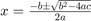

Contents
%syms f x a b c %latex() %
LaTeX Equation Example
This is an equation:
$$\[ |x| = \left\{ \begin{array}{ll} x & \mbox{if $x \geq 0$};\\-x & \mbox{if $x < 0$}.\end{array} \right. \] $$
Error updating Text.
Character vector must have valid interpreter syntax:
$$\[ |x| = \left\{ \begin{array}{ll} x & \mbox{if $x \geq 0$};\\-x & \mbox{if $x < 0$}.\end{array} \right. \] $$
a=1;
$f(x;a,b,c)=\begin{matrix}\end{matrix}$
Error updating Text.
Character vector must have valid interpreter syntax:
$f(x;a,b,c)=\begin{matrix}\end{matrix}$
It is not in line with the text.
%0, & x\leq a\\ \frac{x-a}{b-a}, & a \leq x \leq b\\ \frac{c-x}{c-b}, & b \leq x \leq c\\ 0, c\leq x
Some people's favorite equation is the quadratic formula: . But some people prefer the Fundamental Theorem of Calculus:
$$\begin{cases}& \text{ if } x= \\ & \text{ if } x= \\ & \text{ if } x= \\ & \text{ if } x= \end{cases}$$
$$e^{\pi i} + 1 = 0$$LaTeX Markup Example
This is a table: